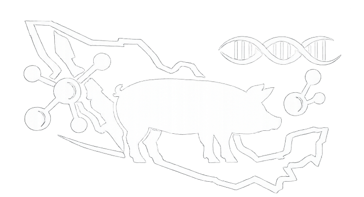

Molecular Epidemiology and Genomic Surveillance
Interactive platform for visualization, molecular surveillance, and epidemiological analysis of swine pathogens in Mexico, focused on PRRSV and PCV2 circulation in Jalisco.

Swine Genomic Surveillance Platform
Interactive platform for visualization, molecular surveillance, and epidemiological analysis of swine pathogens in Mexico, focused on PRRSV and PCV2 circulation in Jalisco.